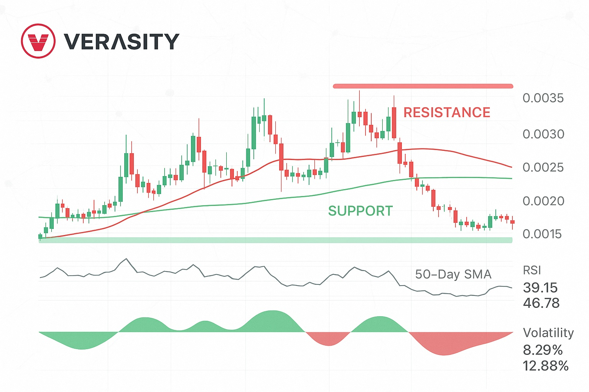

Verasity Price Prediction for End of 2025: In-Depth Analysis and Insights
The information in this article is provided for educational purposes only and is not investment advice. Cryptocurrency investments carry risks.
Introduction
As of August 20, 2025, 10:22 PM EEST, Verasity (VRA) is trading at approximately $0.00147, with a market capitalization of around $14.14 million, ranking it #416 among cryptocurrencies. Launched in 2018, Verasity is a blockchain-based platform focused on combating advertising fraud through its patented Proof-of-View (PoV) technology, rewarding viewers and streamlining payments for publishers and advertisers. With recent upgrades like VeraWallet’s fiat off-ramp and cross-chain support on BNB Smart Chain, Verasity aims to enhance token utility and Web3 accessibility. This article provides a detailed analysis of VRA’s price outlook for the end of 2025, exploring bullish and bearish scenarios, key growth drivers, and risks based on current market trends and ecosystem developments.
Current Situation
As of August 20, 2025, Verasity’s price is approximately $0.00147, reflecting a 0.03% increase over the past 24 hours but a -0.01% change over the last 7 days, with a high of $0.00165 and a low of $0.001379. The Fear & Greed Index shows 14.90 (Extreme Fear), indicating cautious market sentiment, while technical indicators like a neutral RSI (37.19) and narrow Bollinger Bands suggest low volatility and potential consolidation. Verasity’s recent cross-chain expansion to BNB Smart Chain and listing on PancakeSwap have boosted visibility, as noted in X posts. Over the past 30 days, VRA saw a 0.07% change, with rising intraday volume signaling early accumulation toward $0.0015–$0.0016.
Price Predictions for End of 2025
Analyst forecasts for Verasity by December 2025 vary widely due to its niche focus and market volatility. Bearish projections, such as WalletInvestor’s, suggest a potential drop to $0.000198 (-86.53%), citing bearish trends. Moderate estimates from CoinCodex and MEXC predict VRA trading between $0.00136 and $0.0085, averaging $0.00493, driven by steady adoption. Bullish forecasts include CoinPedia’s $0.164, CoinLore’s $0.0709, and CCN’s $0.0085, with highly optimistic scenarios like Crypto.ro’s $1.25 contingent on a strong altcoin season and PoV adoption. These projections reflect Verasity’s potential but underscore its speculative nature.
Factors Driving Price Growth
- Proof-of-View Technology: Verasity’s patented PoV combats ad fraud, attracting advertisers and publishers to its ecosystem.
- Cross-Chain Expansion: Integration with BNB Smart Chain and listings on major exchanges like Binance and PancakeSwap enhance accessibility, as highlighted in X posts.
- VeraWallet Upgrades: The July 2025 fiat off-ramp via Paybis boosts token utility, enabling seamless VRA-to-fiat conversion.
- Market Sentiment: An anticipated altcoin season in Q2 2025 could drive VRA’s price, as per Coinpedia’s analysis.
- Community Engagement: Active promotion on X and Discord, as noted in Reddit posts, increases visibility and investor interest.
Risks and Downward Factors
- Market Volatility: VRA’s 0.07% monthly change and sensitivity to crypto market corrections could push prices toward $0.001245, as per CoinPedia.
- Limited Adoption: As noted in Reddit discussions, major platforms like YouTube may not adopt Verasity’s PoV, limiting its market reach.
- Regulatory Risks: Stricter regulations on blockchain-based advertising could hinder Verasity’s growth.
- Competition: Established advertising platforms and competing blockchain solutions may overshadow Verasity’s niche focus.
Volatility Analysis
From July to August 2025, VRA’s price fluctuated between $0.001379 and $0.00165, with 11.16% volatility, reflecting its sensitivity to market sentiment. Technical indicators, including a neutral RSI (37.19) and a bearish Balance of Power (-0.67), suggest weak momentum but potential for a breakout above $0.0016 if volume exceeds $7 million, as per MEXC data. X posts highlight rising volume and community optimism, while CoinLore notes support at $0.00129 and resistance at $0.0025. A Q2 2025 altcoin season could drive a 31.01% increase to $0.001778, per CoinCodex, but failure to break resistance may see VRA retreat to $0.0012.
Conclusion
By the end of 2025, Verasity’s price is projected to range between $0.00136 and $0.0085, with optimistic scenarios suggesting up to $0.164 if PoV adoption and altcoin market trends align. Growth factors like cross-chain expansion, VeraWallet upgrades, and community engagement support bullish potential, but risks such as volatility, limited adoption, regulatory hurdles, and competition warrant caution. Investors should conduct thorough research and practice risk management before investing in Verasity.